A pink, round, derpy looking PokeMon, with a swirl for his hairdo and a giant tongue, complete with a round belly and yellow stripes and a curly tail stands.
Lickilicky
#463
Licking Pokémon
Sinnoh Region
The best moves for Lickilicky are Lick and Hyper Beam when attacking Pokémon in Gyms.
This move combination has the highest total DPS and is also the best moveset for PVP battles.
Lickilicky is a dark pink, rotund Pokémon with a small tail and a long tongue.
It has a yellow
line pattern on its belly and a white bib-like pattern
This makes it almost resemble a round
baby boy. It also has what appears to be a curled appendage on its head.
It has a big appetite. It can lick anything or anyone close by for any leftover crumbs
Its saliva contains a numbing solvent and can decompose anything, and it wraps its long tongue around
things, like its prey, to coat them with its sticky saliva.
It has space in its throat to store saliva, and it can also roll up its tongue and store it there.
Lickilicky lives in forests with a large body of water. It uses its tongue with more skill than it would its
hands and feet, and a current record of its stretch length exceeds 82 feet.
Tongue can also function with the same dexterity as a human hand.
However, Lickilicky is rather clumsy with its own fingers.
So Many Features to Explore!
The Perfect Companion To Every PokéMon Trainer!
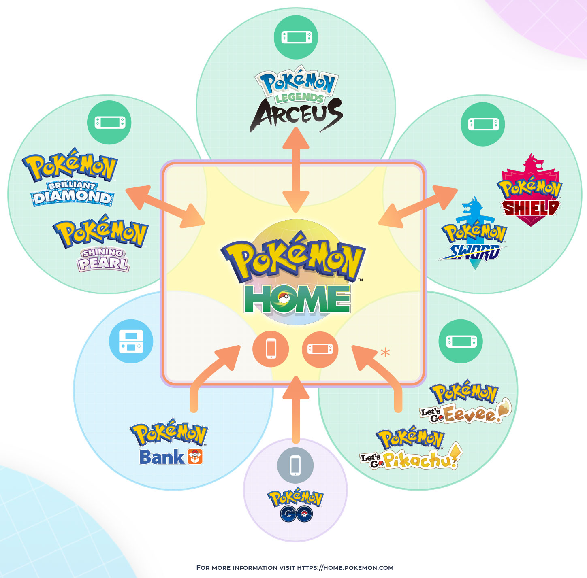
You can transfer bettween PokeMon Home - back and forth between Legends Arceus, Brilliant Diamond and Shining Pearl, Sword and Sheild.
As of currently, you can only transfer one way into Home with PokeMon bank, PokeMon Go, and Pokemon Let's go Eevee and Pikachu Verisons.
So many ways to play and transfer or trade your favourites through so many games!
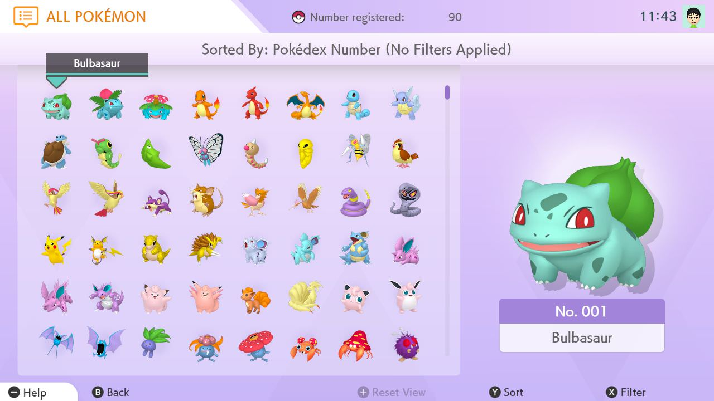
A user screen displays a bunch of smaller sprites representing PokeMon inside the PokeMon Box module, beside them is the PokeMon Bulbasaur which is enlarged.
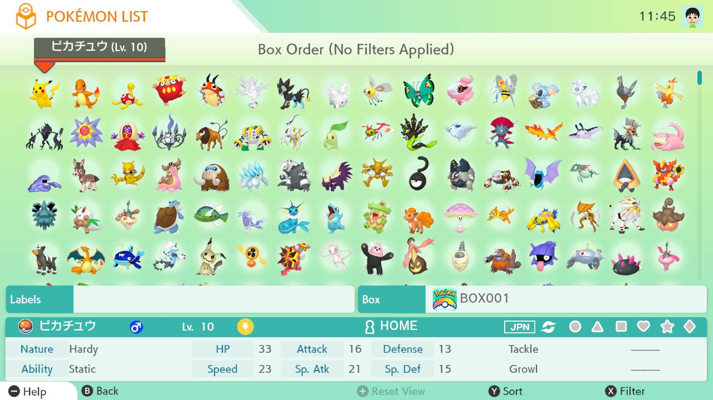 In this User screen, we can view a variet of PokeMon's smaller sprites in the PokeMon box, below it we see name gender, any applicable markings, It's nature and ability,
and its battle stats and attacks.
The Nintendo Switch version of Pokémon HOME supports connectivity with the Nintendo Switch games Pokémon Sword, Pokémon Shield, Pokémon: Let’s Go, Pikachu!, and Pokémon: Let’s Go, Eevee!
Both the Nintendo Switch version and mobile device version of Pokémon HOME support connectivity with the Nintendo 3DS software Pokémon Bank.
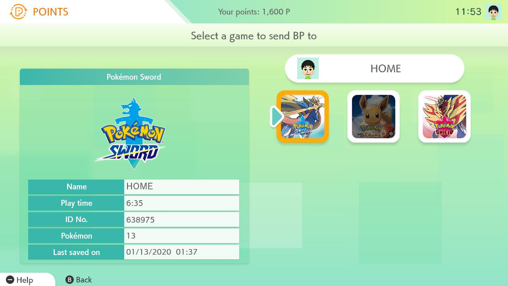
Battle Points are one of few advantages to having the PokeMon Home App, usually these are hard to find and usefull in a variety of different game verisons. These are a special treat that you earn everytime you use PokeMon Home.
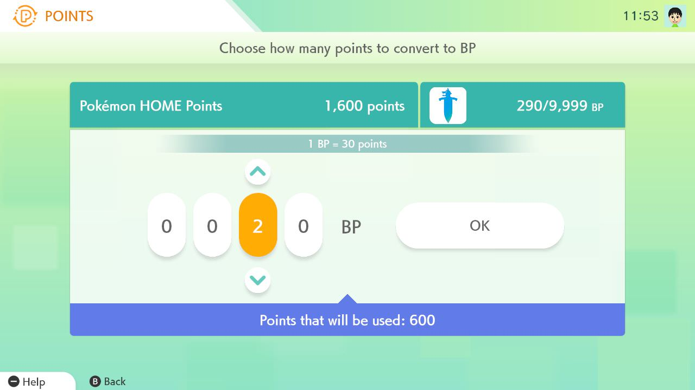 On this screen we can see the player deciding which game to send valuable Battle Points to. These are rare points used to trade in for a variety of special items in game used to conidtion your chosen team to make them stronger, these items are very usefull for competitive battling.
Pokémon HOME is a cloud service for Nintendo Switch and compatible mobile devices designed as a place where all Pokémon can gather. By linking the same Nintendo Account to both the Nintendo Switch version and mobile version of Pokémon HOME, you’ll be able to access the same Pokémon Boxes on both versions!
With Pokémon HOME, you can move Pokémon between compatible games, trade Pokémon on the go, and more!
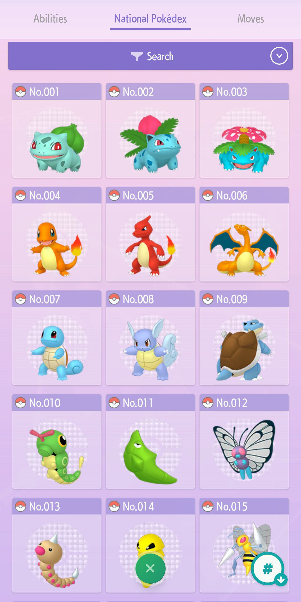
We are on the National Pokedex, there are many different kinds of formats, this helps the user see what they need to find next in order to complete their Pokedex or see what they need to catch or battle next in Training. So many uses!
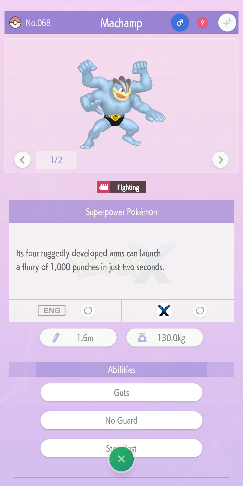
With so many optional screens one can check the stats of a desired PokeMon and view their progress with EV and IV training, the opportunities are endless.
Pokémon placed in the Wonder Box can be traded with people around the world before you even know it! The Pokémon placed in the Wonder Box will be traded even when you’re not using Pokémon HOME.
You’ll be able to increase the number of Pokémon you can trade at once by enrolling in a Premium Plan*.
*Subscription is paid service and is not included with your regular Nintendo Switch subscription fees.
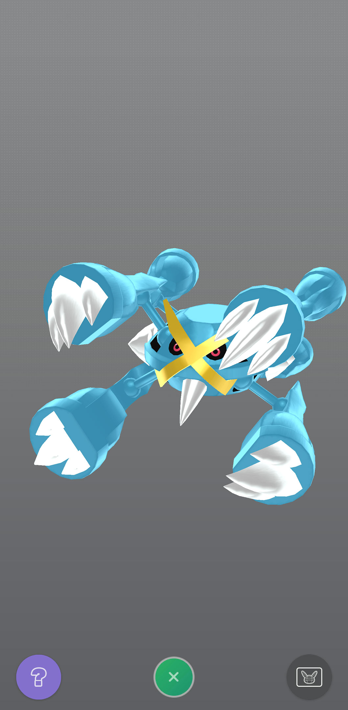
There are so many options in PokeMon Home, and with connectivity with different Verisons of the mainline PokeMon games, the value is much more than a simple Poke'Mon companion.
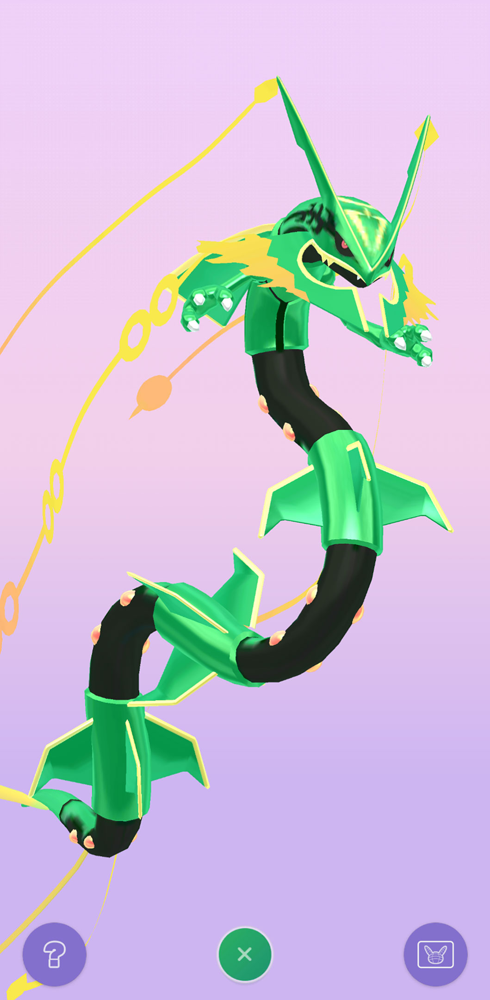
In this mode you can hear PokeMon cries for all different verisons of PokeMon and you can log the locations they are found.
Pokémon will be registered to the National Pokédex when you deposit them in the Boxes in Pokémon HOME. If you move a Pokémon that can Mega Evolve or Gigantamax, then these forms will be registered, too! In the National Pokédex, you’ll be able to see Pokédex entries from various different games in one place.
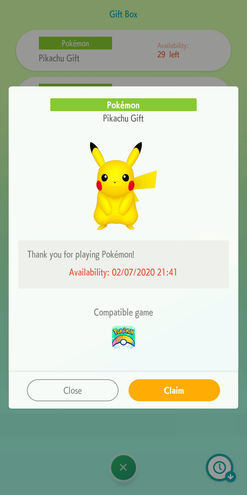
All distribution events are in store or released during special events or online through out partners and social media platforms.
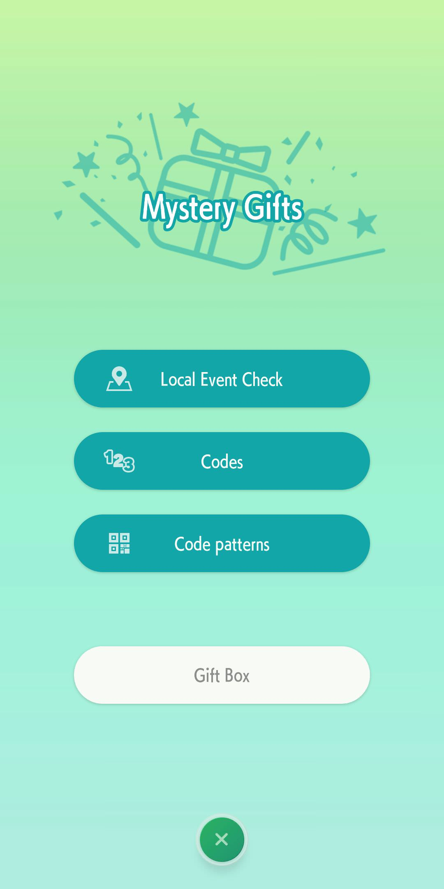 There are multiple options shown, you can receive a Mystery Gift, check your gift box, or check your gift history.
You can also get some gifts, such as items for Pokémon, by receiving a code for a Mystery Gift in Pokémon HOME and then using that code in Pokémon Sword or Pokémon Shield.